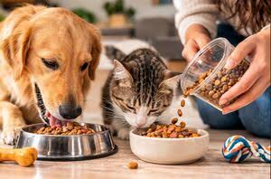
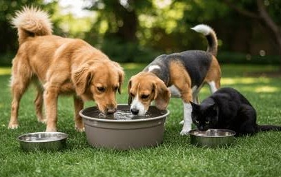
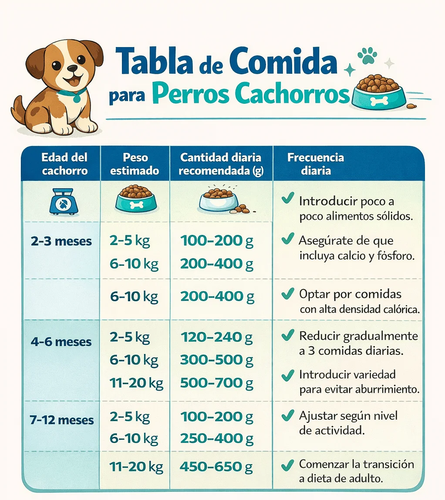
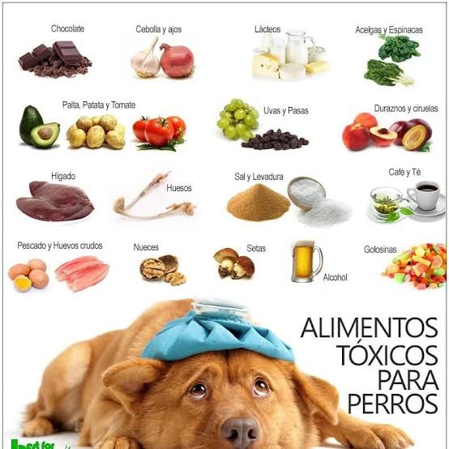
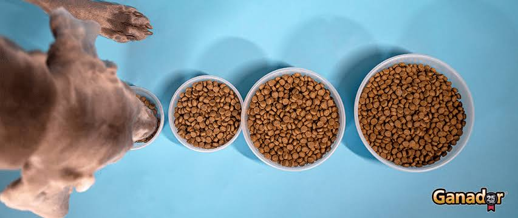
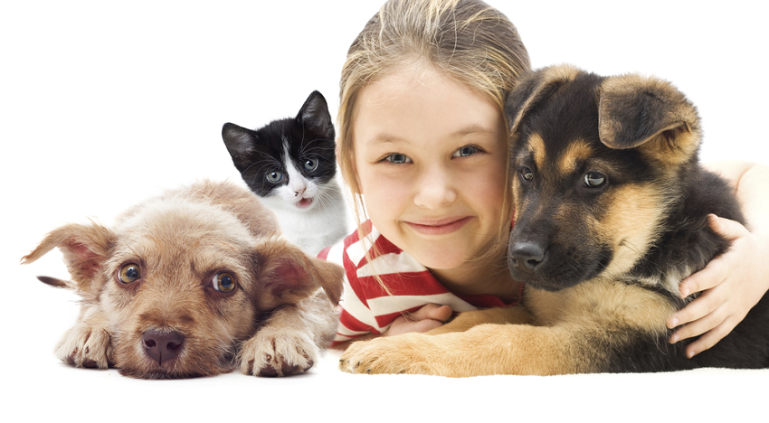

CUIDAR TAMBIÉN ES ALIMENTAR
Una buena alimentación ayuda a tu mascota a crecer sana, tener energía y disfrutar cada momento contigo.
Descubrir consejosCada mascota tiene necesidades diferentes. Elegir el alimento adecuado, ofrecer agua limpia y cuidar sus porciones son hábitos que ayudan a mantenerla saludable.
PEQUEÑOS HÁBITOS, GRANDES CUIDADOS
Aprende a cuidar la alimentación de tu mascota con estos sencillos consejos.

Selecciona un alimento adecuado para su especie, edad y necesidades.

Mantén siempre disponible agua limpia y fresca para que tu mascota pueda beber.

Establece horarios de comida y procura mantener una rutina diaria.

Algunos alimentos humanos pueden ser dañinos. Comprueba que sean seguros antes de ofrecérselos.

Ofrece una cantidad adecuada para su edad, tamaño, actividad y necesidades.
Una buena alimentación, agua limpia y atención veterinaria ayudan a mantenerla saludable.
Si tienes dudas sobre qué alimento elegir o cuánto darle, consulta con un veterinario. Él puede orientarte según las necesidades de tu mascota.
